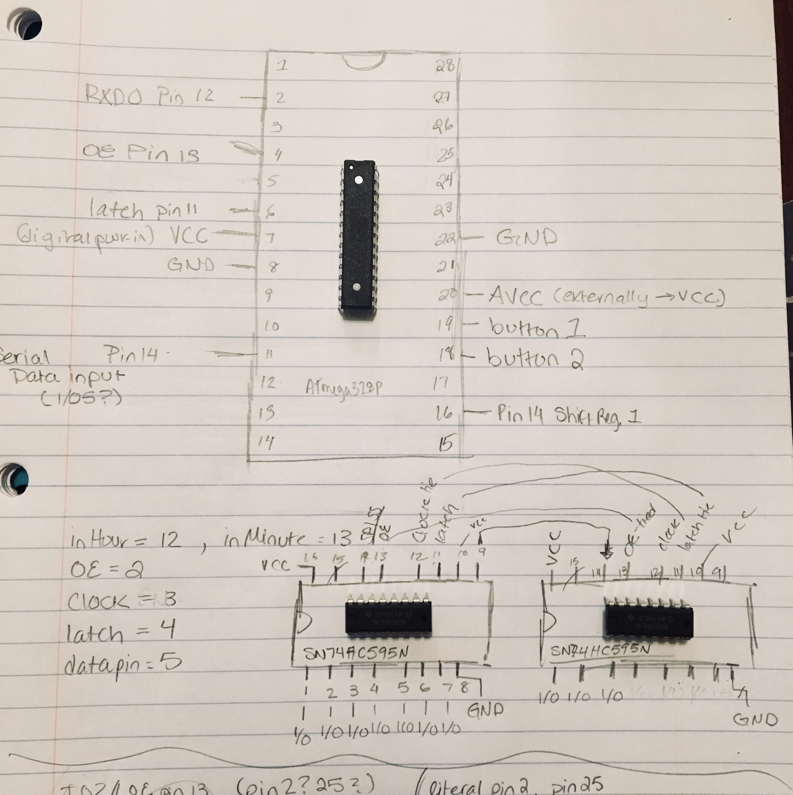
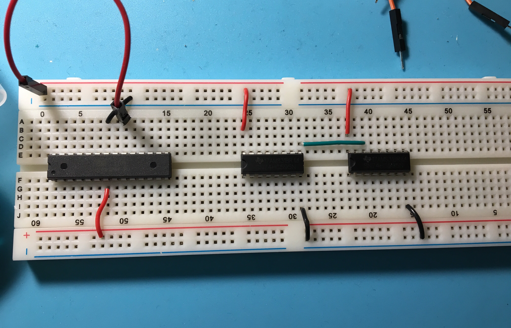
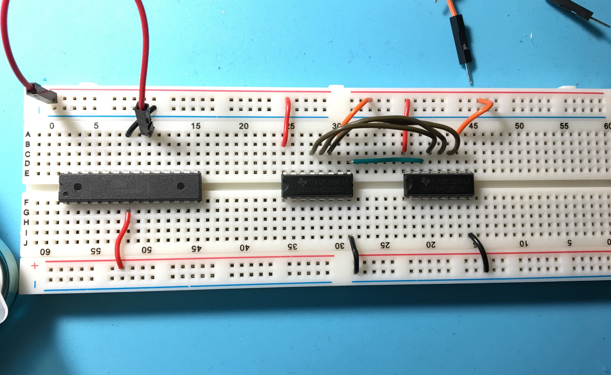
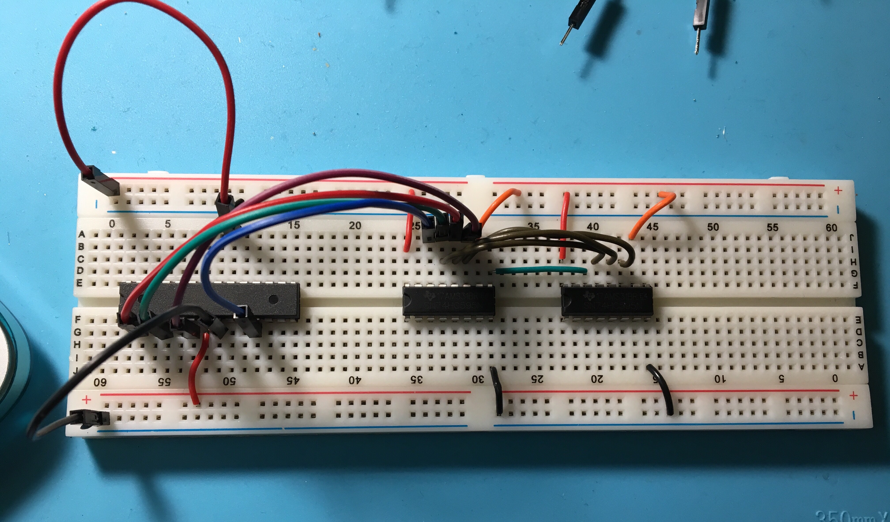
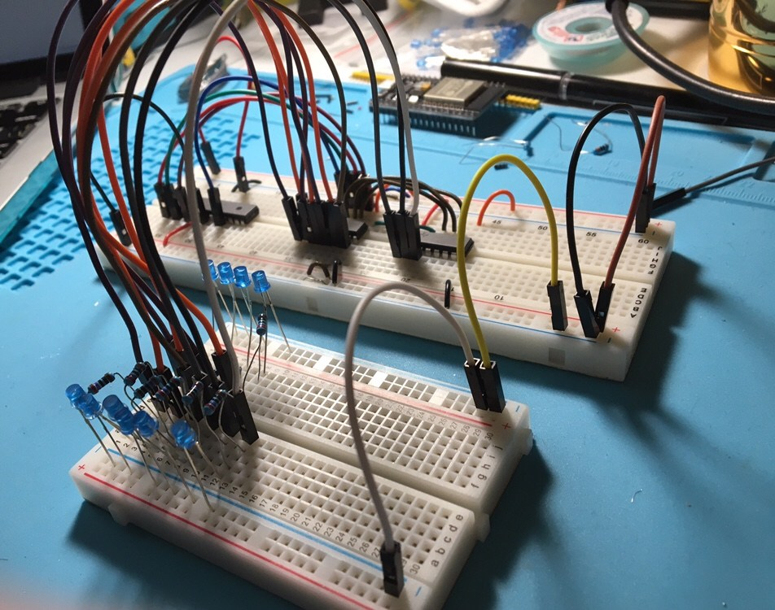
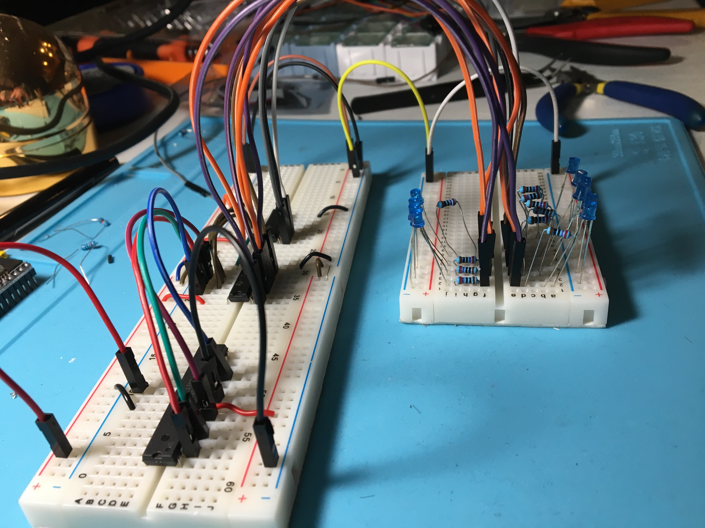
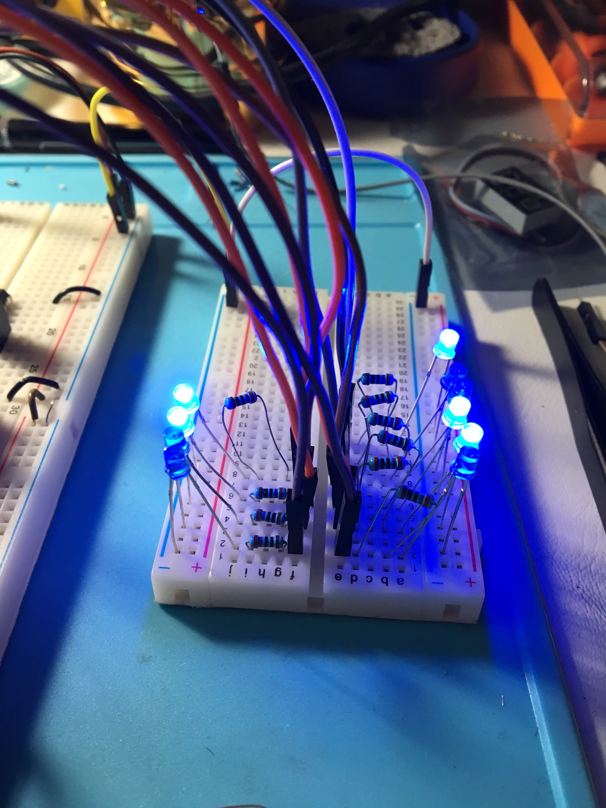

[1.25.18]
ATmega328P Microcontroller + 74HC595 Shift Register
Setup | Binary Watch
I was researching the other day on the ESP-WROOM-32 module I had bought off of eBay for my binary watch and found this lovely PDF about hardware design guidelines.
After looking further into it, it's a PDF about all the things you have to include when designing a board with it! Ack! Huge facepalm moment.
I went back to the drawing board and researched people who have designed and created their own and decided to switch the brains of the watch to the ATmega328P, the main microprocessor of the Arduino. This means I can program the new ATMegas on a breadboard with the Arduino Uno. Super sweet, and handy.
I was looking for a microcontroller with a deep sleep or ultra low-power mode so the CR1225 battery wouldn't be completely drained after one day. I was considering using the PIC18F24J11 because of its specific design for low power feature, but decided against it since I have a bit of a deadline for the schematic of this project. Not to mention I already know how to program an ATmega328P, and it would take a bit to learn how to program a different kind of microcontroller.
With all that, I ordered the ATmega's, got them from DigiKey in 3 days (really fast, I'm definitely buying parts from them again!), burned the bootloader and code with Arduino as ISP, and set to work on figuring out the I/O pins.
First I had to remember what pins I used to get the program to work on the ESP32, and what those pins were so I could identify them on the ATmega. These were the pins on the ESP32 that I tested and confirmed work with the code I linked in Project Hype: Binary Wristwatch.
IO2/GPIO2 - Output Enable (pin 13 SR)
IO4/GPIO4 - SH_CP (pin 11 SR)
IO5/GPIO5 - DS or Serial Data Input (
pin 14 SR)
RXD0/GPIO3 - ST_CP (pin 12 SR)
IO13 - Button 1 (hrs)
IO12 - Button 2 (mins)
This was an extremely helpful digital I/O chart that helped me identify the ATmega pins from the ESP32 guidelines.
{[EDIT (feb 3rd, 2018): These are not the correct pin numbers, but i'm keeping them here for debugging purposes! If you would like to see the correct way to set the circuit up, please read the end of: Prepping the ATmega328P: bootloader burn, fuse-byte programming, and hardware test | binary watch]}
Thanks to the chart and a pinout of the ESP32, I knew which pins to
connect to which shift registers. (ATmega connected to
shift register pin)
Physical pin 6 (PCINT20/XCK/T0) PD4 connected to Pin
11 (latch, or SH_CP)
Physical Pin 2 (PCINT16/RXD) PD0] connected to Pin 12
(clock, or ST_CP)
Physical Pin 4 (PCINT18/INT0) PD2] connected to Pin 13
(Output Enable, OE)
Physical Pin 11 (PCINT21/OC0B/T1) PD5 connected to Pin
14 (Serial Data Input)

The appropriate pins on the shift registers and microcontrollers
are connected to Vcc or GND. You can
tie Pins 11, 12, and 13 on the shift registers, as well. Finally,
make sure that pin 9 on shift register 1 is connected to pin 14 of
shift register 2. (You can kind of see it in my diagram.)
Alright! Next step...testing this baby out.




And finally...adding power!The LEDs on the left represent minutes, and the LEDs on the right represent minutes. Though they lit up, they didn't change every 60 seconds as programmed. This likely means that the clock pin isn't being utilized. I unplugged the jumper wire connecting RXD0 and pin 12 (ST_CP) and all of a sudden the LEDs started blinking irregularly. I moved around some wires and LEDs were going bonkers.
Putting pressure on certain parts of the microcontroller and shift registers makes the LEDs react, which is downright weird.
I scrapped the ATmega for the moment and used my Arduino Uno to test out the hardware side of the shift registers and code.
Plugging it all together resulted in a cycle through of all the LEDs like normal, so it must be the pins that I'm utilizing on the ATmega328P. Which is cool! I wasn't entirely certain of my pinout correct-ness to begin with.
Now that I've cornered the problem, I can find out more about how the pin-out works with the ATmega and understand more of the internals going on, then figure out the right ones.
{thallia}